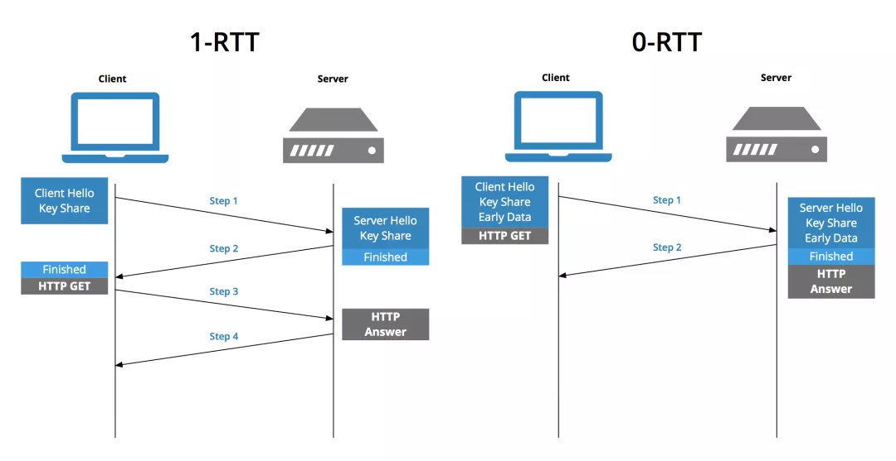

《计算机网络》面试题
本文用于记录学习计算机网络中遇到的习题，和其备忘录相互补充。
计算机网络的分层结构有哪几种？
主要分为三种，OSI 七层结构，TCP/IP 四层结构和五层协议。对应的关系如下：

当在浏览器中输入网址后，到网页显示，其间发生的过程？
主要包括以下步骤：解析 URL，查询 DNS，创建套接字，TCP 封装，IP 封装，MAC 封装，通过网卡传输，经过交换机，路由器到达服务器，服务器进行解包，获取应用层数据，返回对应的响应报文，同样地，客户端在接收到响应报文后进行渲染，浏览器可能还会发送其他资源请求，最终通过 TCP 四次挥手断开连接（可以通过 http 协议的 keep-alive 保持连接，注意其不同于 TCP 中的 keepalive 保活）
不同层是如何称呼数据的？
应用层使用消息（message），传输层使用报文段（segment）或者数据报（datagram），网络层称为包（packet），链路层称为帧（frame）。
交换机工作原理？
交换机是两层网络设备，其会维护一个
MAC-端口表，对于到来的帧，其根据目的 MAC 选择对应的端口进行转发，若没有对应表项，则向所有端口转发（泛洪）。因此，其不会修改 MAC 地址。路由器工作原理？
路由器是三层网络设备，主要作用是路由和转发。其会收集网络拓扑信息形成动态路由表，并且根据路由表进行转发，每次转发的时候必定会修改源 MAC 和目的 MAC 地址，可能会修改源 IP 地址（NAT）。
路由表是做什么用的？
路由表里面的内容可以简单看作是
ip/mask, nexthop，路由表是用来决定如何将包从一个子网传送到另一个子网的，换句话说就是用来决定从一个网卡接收到的包应该送的哪一张网卡上的。当路由器从一个网卡接收到一个包时，它扫描路由表的每一行，用里面的 netmask 和包里的目标 IP 地址做并逻辑运算(&)找出目标网络号，如果此网络号和这一行里的网络号相同就将这条路由保留下来做为备用路由，如果已经有备用路由了就在这两条路由里将网络号最长的留下来，另一条丢掉，如此接着扫描下一行直到结束。在具体的实现中，路由表可能包含更多的信息为选路由算法的细节所用。在网络中有两台主机 A 和 B，并通过路由器和其他交换设备连接起来，已经确认物理连接正确无误，怎么来测试这两台机器是否连通？如果不通， 怎么来判断故障点？怎么排除故障？
测试这两台机器是否连通：从一台机器 ping 另一台机器，如果 ping 不通，用 traceroute 可以确定是哪个路由器不能连通，然后再找问题是在交换设备，hup，还是 cable 上。
HTTP 协议中的 keep-alive 和 TCP 协议中的 keepalive 的区别？
前者在传输完数据后并不会立即进行 TCP 四次挥手，而是将其保持一段时间，方便后续请求响应复用该 TCP 连接，减少处理过程中的 TCP 建立连接的时延；后者则是操作系统为了 TCP 连接保鲜，保活而设置的。
ICMP 协议存在的意义？
确认 IP 包是否成功送达目标地址、报告发送过程中 IP 包被废弃的原因和改善网络设置，主要分为查询报文类型和差错报文类型。
ping 命令实现的过程？
通过构建 ICMP 回送请求，构建 IP 包，通过网络设备发送到目标主机，目标主机构建 ICMP 回送响应，将其发送给源主机，实现了 ping 命令。
traceroute 命令实现的原理？
可以通过 UDP 或者 ICMP 实现，但是原理都是通过递增 TTL 实现的。当 TTL 为 0 时，此时路由器就会直接丢弃网络包，ICMP 差错报文就会被发送到源主机上，UDP 实现的话需要设置端口为一个较大值，防止其有特殊用途，此时 ICMP 会回复一个端口不可达的消息给源主机。
HTTP 状态码分类？
- 1xx：表示目前是协议的中间状态
- 2xx：成功，如 200，201，204，206
- 3xx：重定向，如 301，302，304，307
- 4xx：客户端错误，如 400，401（Unauthorized），403（Forbidden），404
- 5xx：服务器错误，如 500，502（Bad Gateway），503（Service Unavailable）
302 和 307 都是临时重定向，有什么不同？
307 的定义实际上和 302 是一致的，唯一的区别在于，307 状态码不允许浏览器将原本为 POST 的请求重定向到 GET 请求上。
HTTP 优缺点？
报文格式简单，灵活和易于扩展，应用广泛和跨平台；无状态双刃剑，明文传输不安全。
HTTPS 出现的意义？
主要是为了解决 HTTP 明文传输不安全的问题，通过在 TCP 层和 HTTP 层中间添加 SSL/TLS 层实现。其通过混合加密算法实现了信息的机密性，通过摘要算法实现信息完整性。
HTTP 协议的演进过程？
- HTTP/1.1：增加了长连接，支持管道（pipeline）网络传输，但是可能会存在队头阻塞问题
- HTTP/2：基于 HTTPS，保障安全性，头部压缩，二进制格式，支持数据流，多路复用，服务器推送
- HTTP/3：在 HTTP/2.0 多路复用时，如果某个请求发生丢包，会触发 TCP 重传机制，而阻塞其他请求，HTTP/3 基于 UDP，上层的 QUIC 协议可以实现类似 TCP 的可靠性传输，同时 QUIC 合并了 TCP 三次握手和 TLS 四次握手
HTTP 不同版本是如何缓解/解决队头阻塞问题的？
HTTP/1.1：虽然支持流水线请求，但是依旧存在队头阻塞，管道只是解决了请求的队头阻塞，而不是响应的队头阻塞
现代浏览器通常打开多个 TCP，不同 TCP 上处理不同的请求，但是该方案不高效，难扩展
HTTP/2：引入了数据流（stream）和帧（头部帧和数据帧）的概念，允许多路复用一个 TCP 连接，同时还支持控制请求的优先级，但是 HTTP/2 中仍然存在 TCP 的队头阻塞，TCP 并不知道上层的帧的概念，当发生丢包时，可能就会造成不同数据流之间的阻塞
HTTP/3：使用 QUIC 协议，其原生支持流的概念，这样在发生丢包时，只会阻塞丢包对应的流，其他流不受影响，但是会造成请求可能不再按照发送时的顺序到达浏览器
HTTPS/TLS 中的密钥交换算法有哪些，以及算法的优缺点？
密钥交换算法有 RSA 和 ECDHE 算法，前者不支持前向安全性，因此 TLS 1.3 只推荐使用 ECDHE 算法，其优点支持前向安全性（每次会话产生新的私钥），采用椭圆曲线可以使用更少的计算量计算出公钥和会话密钥等。
TLS 握手过程需要几个随机数用于生成会话密钥？
需要三个随机数，分别是看客户端随机数，服务端随机数以及客户端生成的 pre-master，注意，pre-master是通过公钥加密传输给服务端的，可以保持安全性。
TLS 四次握手的过程？
- Client Hello：客户端随机数，密码套件，版本号等
- Server Hello，Server Certificate，Server Hello Done：传输服务端随机数，服务端选择的密码套件，以及服务器的证书
- Client Key Exchage，Change Cipher Spec，Finished：公钥加密 pre-master，传输给服务端；告诉服务端开始使用加密方式发送消息；对前面的信息做摘要，防止被篡改
- Change Cipher Spec，Finished：告诉客户端使用加密方式发送消息；对前面信息做摘要，防止被篡改
TLS 1.3 是如何实现 1RTT 连接的？
客户端在 Client Hello 中的扩展区 extention 中增加支持的圆锥曲线和客户端算法参数 key_share，同样地，服务端在回复 Server Hello 时，也携带对应的算法参数 key_share，这样就完成了双方的密钥信息交换，之后双方通过 ECDHE 和 key_shares 计算出 pre-master，再与双方随机数计算出主密钥，最后通过主密钥进行通信。

HTTPS 建立连接的过程？
TCP 三次握手，TLS 四次握手，之后发送加密消息即可。
HTTPS 优化方案？
HTTPS 性能损耗主要在两方面，TLS 握手过程需要 2RTT，后续应用数据需要使用对称加密解密。
- 协议优化：TLS 1.2 可以使用 ECDHE 密钥交换算法，可以在第三次握手后，第四次握手前，发送应用数据；配合上TLS 1.3，其可以将 Hello 和公钥交换合并成一个信息，因此减少到了只需要 1RTT 就能完成握手
- 会话复用（不具备前向安全，需要设置过期时间）：Session ID，Session Ticket（加密会话密钥）
- 硬件 & 软件：升级支持加密算法的硬件，或者升级 Linux 内核等
使用 HTTP/1.1 有哪些优化措施？
- 启用长连接
Connection: Keep-Alive，减少 TCP 握手时间 - 使用缓存，避免发送 HTTP 请求
- 减少 HTTP 请求次数，可以合并多个请求
- 减少 HTTP 响应数据大小，可以使用压缩技术
- 启用长连接
在 HTTP/1.1 中，客户端是如何进行缓存的，以及缓存过期的操作？
客户端在没有缓存的时候，发送请求给服务端，得到响应后存储在本地作为缓存，同时还附带一个过期时间。若在过期时间之前访问相同的 URL，那么就直接从缓存里面获取数据，否则发送请求给服务端，但是此时附带 etag，服务器检查 etag 和服务端存储数据的值，若没有变化，将返回 304 响应，否则返回最新的数据即可。
HTTP 缓存中，可以使用 Etag/If-None-Match 与 Last-Modified/If-Modified-Since 进行缓存校验，有什么区别？
Etag/If-None-Match 主要用于解决 Last-Modified/If-Modified-Since 无法解决的问题：
- 一些文件也许周期性的更改，但是它的内容并不改变
- 某些文件修改非常频繁，比如在 1 秒内的时间内进行修改
- 某些服务器不能精确得到的文件的最后修改时间
在 HTTP/2 中，相较于 HTTP/1.1，有哪些优化？
- 1.1 版本中头部数据过大，2 中使用 HPACK 算法压缩
- 2 中将 HTTP 响应划分为两个帧（HEADER + DATA）进行传输
- 1.1 版本中长连接存在队头阻塞问题，2 中在 HTTP 层引入了流的概念，支持多路复用，用于缓解队头阻塞问题，同时还支持为不同的流增加权重，但是不能解决底层 TCP 头部阻塞问题
- 2 中引入了服务器主动推送功能，如在客户端请求 index.html 时，主动推送对应的 css 和 js 文件
在 HTTP/3 中，相较于 HTTP/2，有哪些优化？
- 3 中使用 QUIC 协议，其天然支持流概念，因此其消除了 TCP 中存在的队头阻塞问题，指的是一个流丢包，不会影响并发流的传输
- 3 中 QUIC 可以在 1 个 RTT 内完成建立连接和密钥协商，第二次连接时，应用数据包可以和 QUIC 握手信息（连接信息 + TLS 信息）一起发送，达到 0-RTT 的效果
- 只需要通过连接 ID 来标记通信的两个端点，不涉及 IP 地址，切换网络后（弱网环境）不再需要重新连接
由于采用 UDP 作为底层传输协议，大部分路由器在网络繁忙的时候，会丢 UDP 包
由于采用流概念，可能会导致被先发送的请求可能延后得到响应
TCP 三次握手过程？
首先客户端发送对应的 SYN 报文，附带自己的 client_isn，状态修改为 SYN_SENT；接着服务端接收到客户端的 SYN 报文后，向其发送对应的 SYN + ACK 报文，ack = client + 1，同时附带自己的序列号 server_isn，状态从 LISTEN 变换为 SYN_RCVD；接着客户端收到服务端的 SYN 报文，可以发送对应的 ACK 报文给服务端，同时附带自己的应用数据，此时状态为 ESTABLISHED；同样地，服务端接收报文后，修改状态为 ESTABLISHED。
为什么 TCP 握手过程中的第三次握手过程可以发送应用数据？
当客户端收到来自服务端的 ACK + SYN 报文时候，客户端已经可以确定出服务端具有接收和发送的能力，因此此时可以发送应用数据。
为什么 TCP 采用三次握手，而不是两次握手？
三次握手的目的是建立可靠的通信信道，即确定服务端和客户端的发送和接收能力。相较于两次握手，三次握手可以阻止历史重复连接的初始化，防止其造成资源浪费。
在 IP 层同样会进行分片，为什么 TCP 层还规定了 MSS（Maximum Segment Size）？
IP 层确实会分片，若 TCP 层不进行分段，那么但发生丢包时，TCP 层需要重新传输整个报文，而如果采用 MSS，那么只需要重新传输 MSS 单位的数据即可。
SYN 攻击原理？
通过伪造 SYN 报文，占满服务器的 SYN 接收队列（半连接队列），使得服务器不能正常工作。
TCP 四次挥手的过程？
客户端发送 FIN 报文（FIN_WAIT1）给服务端，服务端接收到后（CLOSED_WAIT）返回 ACK 报文给客户端（FIN_WAIT2）；在服务器确认不需要发送任何数据给客户端时，此时其发送 FIN 报文给客户端（LAST_ACK），同样地，客户端接收到后（TIME_WAIT）需要发送对应的 ACK 给服务端，同时为了避免发生丢包，客户端进入 TIME_WAIT 状态，在等待 2MSL 后，才能进入 CLOSED 状态；服务端收到 ACK 后进入 CLOSED 状态。
为什么主动关闭方需要 TIME_WAIT 状态？
防止具有相同四元组的 TCP 连接收到上次连接的旧数据包，保证最后的 ACK 能被被动关闭方接收到，帮助其正常关闭。
为什么 TIME_WAIT 需要 2MSL（ Maximum Segment Life）？
保证最后的 ACK 可能丢失时，依旧能够收到服务器重新发送的 FIN 报文，帮助服务器正确进行关闭。
TCP 超时重传和快速重传机制？
超时重传：超时重传时间 RTO 的值应该略大于报文往返 RTT 的值，发生重传时，会加倍 RTO，重传时间较长
快速重传：当接收端收到乱序的包时，此时就可以返回对前一个正确分组的 ACK，发送端收到三次相同 ACK，触发重传
既然有了快速重传，为什么还需要 SACK？
只使用快速重传时，会重新传输被丢包以及其后面的包，造成网络资源浪费，如果在收到乱序的包时，返回前一个正确分组的 ACK ，并且同时附带 SACK，表示哪些包收到了，这样的话，就可选选择性重传那些真正丢包的数据，节省网络资源。
D-SACK（Duplicate SACK）又是什么？
复用了 SACK 来告诉发送方有哪些数据被重复接收了，让发送方知道是丢数据包还是 ACK 包。
接收端在收到 TCP 报文后会立即返回对应的 ACK 报文吗？
不会，TCP 中存在延迟确认机制，在收到消息后会等待大约 200ms 再发送 ACK 报文，这样做可以减少 ACK 报文的数目，降低网络流量。另外，建立连接后，ACK 报文也可以携带应用层数据。
为什么 TCP 需要引入发送窗口和接收窗口的概念？
在传统 TCP 交互中，发送端在发送了一个包后，需要等待收到对应的 ACK 才能继续发送下一个包，数据传输缓慢，为此引入了窗口的概念。接收方在 ACK 报文中通知发送端自己的接收窗口大小，这样发送端可以采取流水线的方式发送接收窗口大小的数据包，并且等待 ACK 即可。通常发送窗口约等于接收窗口，因为滑动窗口大小是随着网络拥塞程度而改变的。
TCP 流量控制机制？
借助滑动窗口机制，可以在发送 ACK 报文的同时附带上接收方的窗口大小，这样，发送方就可以根据接收方的窗口大小来发送数据，达到流量控制的效果。如果接收到窗口大小为 0 的报文，此时，就启动持续计时器，如果超时，就会发送窗口探测报文，用于探测接收方的接收窗口大小。
TCP 拥塞控制目的和过程？
防止网络出现拥堵时，发送方还继续发送大量数据包，导致网络更加拥堵。引入拥塞窗口后，发送窗口的值为 swnd = min(cwnd, rwnd)，只要网络没有拥塞，cwnd 就会增大，反之，cwnd 就会减少。一旦发生重传，就会认为网络出现了拥塞，算法如下：
慢启动：cwnd 呈现指数型增长
慢启动的时候，直接 double 很可能丢包，怎么调节使得慢启动阶段不丢包？考虑嗅探网络带宽，用第一个 ack 的来回时间来试探网络性能
拥塞避免：一旦到达慢启动门限 ssthresh（slow start threshold），cwnd 呈现线性增长
拥塞发生：
- 超时重传：ssthresh = cwnd / 2，cwnd = 1，也就是进入慢启动，此时网络状况不好
- 快速重传 + 快速恢复：ssthresh = cwnd / 2，cwnd = ssthresh + 3，进入快速恢复阶段，每收到重复 ACK 时，cwnd 加一，收到非重复 ACK 时，cwnd = ssthresh，并进入拥塞避免阶段

Slow start was introduced in 1988*. It was called “slow start” because it was slower than the prior approach which was simply blasting packets out without considering the congestion.
网络层（IP 层）和链路层的区别？
网络层用于实现两个主机间的通信，而链路层则用于实现两个直连设备间的通信。
IP 地址分类？
- 传统分类：ABCDE 类地址，但是在同一网络下没有地址层次，不能很好的与现实网络匹配等问题
- CIDR（Classless Inter-Domain Routing）：表示为
a.b.c.d/x，前 x 位表示网络号，后 32 - x 位表示主机号，类似子网掩码
在子网 210.27.48.21/30 种有多少个可用地址？分别是什么？
30 表示的是网络号是 30 位，剩下 2 位中 11 是广播(broadcast)地址，00 是 multicast 地址，只有 01 和 10 可以作为 host address。
IP 分片和重组？
当 IP 数据包超过 MTU 大小时，IP 数据包就会被分片，但是由于分片后的 IP 数据包只能在目标主机进行重组，一旦丢失某个分片数据，则需要重传整个 IP 数据包，造成网络资源的浪费，因此一般会规避 IP 分片。为此，TCP 层规定了 MSS，并且 MSS = MTU - IP header size - TCP header size，这样，IP 层就不会产生分片，重传时只需要传输对应的 TCP 包即可。
为什么 MTU 一般值为 1500？
标准的以太网数据帧大小是 1518，头信息 14 字节，尾部校验和占了 4 字节，所以留给上层协议传输数据大小就是 1400 字节。当然可以将其设置得小一些，但是存在的问题就是传输效率低下。而以太网规定数据帧大小 1518 可能也是出于公平的原因，如果设置的太大，那么一个用户在进行数据传输的时候，其他用户需要等待比较长的时间才能发送自己的数据，不太公平。
IPv4 和 IPv6 的区别？
- 地址位数及其表示方法
- IPv6 即使没有 DHCP 服务器也可以自动分配 IP 地址
- IPv6 包头固定长度为 40 字节，提高了传输性能
- IPv6 能够防止线路窃听，提高安全性
和 IP 层相关的协议有哪些？
- ARP：主机广播 ARP 请求，包里面包含了想要知道 MAC 地址的主机 IP 地址，实现了 IP 地址到 MAC 的查询，收到包的路由器会将其 IP 与自己进行对比，以决定是否回复
- DHCP：用于动态获取 IP 地址，省去配置 IP 信息繁琐过程
- NAT：用于缓解 IPv4 地址紧缺问题，在内网想要外部通信时，路由器会转换修改源 IP 地址为共有 IP 地址，一般使用 NPAT，即同时修改源 IP 地址和源端口地址
- ICMP：互联网控制报文协议，用于确认 IP 包是否达到，报告 IP 包废弃的原因等
- DNS：用于查询域名对应的 IP 地址
抓包发现 TCP 挥手是三次的原因？
当服务器收到客户端的 FIN 时，如果之后没有数据发送给客户端，就会合并 ACK 和 FIN 报文。
TCP 三次握手过程中发生丢包时，会发生什么？
- 第一次的 SYN 包丢失：RTO 指数增长，tcp_syn_retries
- 第二次的 SYN + ACK 包丢失：RTO 指数增长，tcp_syn_retries，tcp_synack_retries
- 第三次的 ACK 丢包：RTO 指数增长，tcp_synack_retries，tcp_retries2
TCP 四次挥手过程中发生丢包时，会发生什么？
- 第一次的 FIN 包丢失：RTO 指数增长，tcp_orphan_retries
- 第三次的 FIN 包丢失：RTO 指数增长，tcp_orphan_retries
- 第二次或者第四次 ACK 包丢失：不会重传 ACK 包，而是重传 FIN 包
什么是 TCP Fast Open，有什么优势与限制？
第一次 TCP 连接时给客户端发送 Cookie，对于接下来的连接客户端就可以直接带上 Cookie 和对应的 HTTP 请求，达到 Fast Open 的效果；
只能用于 GET 请求，不能用于 POST 等其他请求，需要防止重放攻击。
谈谈你对停止等待协议的理解？
停止等待协议是为了实现可靠传输的，它的基本原理就是每发完一个分组就停止发送，等待对方确认。在收到确认后再发下一个分组；在停止等待协议中，若接收方收到重复分组，就丢弃该分组，但同时还要发送确认。主要包括以下几种情况：无差错情况、出现差错情况（超时重传）、确认丢失和确认迟到。
谈谈你对 ARQ 协议的理解？
ARQ 协议即自动重传请求（Automatic Repeat-reQuest），分为：
- 停等 ARQ 协议：停等 ARQ 协议相当于发送窗口和接收窗口大小均为 1 的滑动窗口协议。即发送方发送一个帧后，必须接收到一个确认帧（ACK）才能发送下一个。优点是简单，缺点是数据传输速度低
- 连续 ARQ 协议：为了克服停等 ARQ 协议长时间等待 ACK 的缺点，这个协议会连续发送一组数据包，然后再等待这些数据包的 ACK。
- 回退 N 帧 ARQ 协议（Go-Back-N）：接收端丢弃从第一个没有收到的数据包开始的所有数据包，发送端收到 NACK 后，从 NACK 中指明的数据包开始重新发送
- 选择性重传 ARQ 协议（Selective Repeat）：发送端连续发送数据包但对每个数据包都设有个一个计时器，当在一定时间内没有收到某个数据包的 ACK 时，发送端只重新发送那个没有 ACK 的数据包
TCP 延迟确认和 Nagle 算法原理，它们共同作用是什么？
- 延迟确认：没有携带数据的 ACK，其有效负载也是很低的，通过等待一定时间再发送 ACK 给客户端，可以减少 ACK 的个数
- Nagle 算法：没有已发送未确认报文时，立刻发送数据；存在未确认报文时，直到没有已发送未确认报文或数据长度达到 MSS 大小时，再发送数据
共同作用是减轻网络负载，前者通过减少 ACK 报文实现，后者通过减少网络中的多个小数据块（合并成大数据块）实现。因此，不能同时使用延迟确认和 Nagle 算法，会造成额外的时延。
TCP 协议是如何保证可靠传输的（如何保证可靠性）？
主要从确认和超时重传，数据包校验，流量控制，拥塞控制等方面进行说明：
- 数据包校验：目的是检测数据在传输过程中的任何变化，若校验出包有错，则丢弃报文段并且不给出响应，这时 TCP 发送数据端超时后会重发数据；
- 对失序数据包重排序：既然 TCP 报文段作为 IP 数据报来传输，而 IP 数据报的到达可能会失序，因此 TCP 报文段的到达也可能会失序。TCP 将对失序数据进行重新排序，然后才交给应用层；
- 丢弃重复数据：对于重复数据，能够丢弃重复数据；
- 应答机制：当 TCP 收到发自 TCP 连接另一端的数据，它将发送一个确认。这个确认不是立即发送，通常将推迟几分之一秒；
- 超时重发：当 TCP 发出一个段后，它启动一个定时器，等待目的端确认收到这个报文段。如果不能及时收到一个确认，将重发这个报文段；
- 流量控制：TCP 连接的每一方都有固定大小的缓冲空间。TCP 的接收端只允许另一端发送接收端缓冲区所能接纳的数据，这可以防止较快主机致使较慢主机的缓冲区溢出，这就是流量控制。TCP 使用的流量控制协议是可变大小的滑动窗口协议。
- 拥塞控制：防止网络发生拥塞时，不断重试导致网络更加拥塞，确保网络环境能保证数据有效传送。
TCP 连接过程中的半连接队列和全连接队列指什么？
当服务端受到客户端的 SYN 请求后，内核会把该连接存储到半连接队列；当服务端收到客户端的 ACK 响应后，内核会把连接从半连接队列移除，并将其放入全连接队列中。
TCP 全连接队列溢出会发生什么现象，如何解决？
全连接队列溢出后，后续请求报文或者被丢弃，或者被发送 RST 报文，由 tcp_abort_on_overflow 控制；可以考虑增加全连接队列长度：min(somaxconn, backlog)
listen(int sockfd, int backlog)：backlog 应用层定义的全连接队列大小
TCP 半连接队列溢出会发生什么现象，如何解决？
半连接队列溢出后，将不会有新的连接被建立，SYN 洪泛攻击就是基于此原理；
可以考虑开启 tcp_syncookies 功能（将连接信息存储在 SYN + ACK 报文中，不需要半连接队列），增加半连接队列长度（max_qlen_log = min(min(somaxconn, backlog), max_syn_backlog) × 2）措施来缓解该情况。
TCP 三次握手有哪些调优参数？
- 调整 SYN 报文的重传次数：tcp_syn_retries
- 调整 SYN 半连接队列长度：tcp_max_syn_backlog，somaxconn，backlog
- 调整 SYN + ACK 报文的重传次数：tcp_synack_retries
- 调整全队列长度：somaxconn，backlog
- 绕过三次握手：tcp_fastopen
TCP 四次挥手有哪些调优参数？
- 调整 FIN 报文重传次数：tcp_orphan_retries
- 调整 FIN_WAIT2 状态的时间：tcp_fin_timeout
- 调整孤儿连接上限：tcp_max_orphans
- 复用 time_wait 状态的连接：tcp_tw_reuse
TCP 传输优化有哪些调优参数？
- 扩大窗口：tcp_window_scaling
- 调整发送缓冲区范围：tcp_wmem
- 调整接收缓冲区范围：tcp_rmem
- 调整内存范围：tcp_mem
TCP 和 UDP 区别？
- TCP 面向连接的字节流协议，UDP 则是面向报文的无连接协议
- TCP 可以保证数据从用户到服务器的有序传输，UDP 不行
- UDP 不提供数据可靠性保障，TCP 有流量控制和拥塞控制
- TCP 用于 HTTPS，SMTP，FTP 协议，而 UDP 主要用于流媒体，DNS 等系统
- TCP 首部较长 20 字节，UDP 首部较短 8 字节
TCP 黏包是怎么产生的？
- 发送方产生粘包：采用 TCP 协议传输数据的客户端与服务器经常是保持一个长连接的状态（一次连接发一次数据不存在粘包），双方在连接不断开的情况下，可以一直传输数据。但当发送的数据包过于的小时，那么 TCP 协议默认的会启用 Nagle 算法，将这些较小的数据包进行合并发送（缓冲区数据发送是一个堆压的过程）；这个合并过程就是在发送缓冲区中进行的，也就是说数据发送出来它已经是粘包的状态了。
- 接收方产生粘包：接收方采用 TCP 协议接收数据时的过程是这样的：数据到接收方，从网络模型的下方传递至传输层，传输层的 TCP 协议处理是将其放置接收缓冲区，然后由应用层来主动获取（C 语言用 recv、read 等函数）；这时会出现一个问题， 就是我们在程序中调用的读取数据函数不能及时的把缓冲区中的数据拿出来，而下一个数据又到来并有一 部分放入的缓冲区末尾，等我们读取数据时就是一个粘包。（放数据的速度 > 应用层拿数据速度）
什么是 TCP 粘包，以及如何解决该问题？
一般指的是 send 两次数据，但是 recv 一次就得到了两次 send 的数据，这是由于 TCP 是面向字节流的特性而导致的，解决该问题实际上就是需要用户来解决 stream2datagram 的问题，具体方法：
- 固定包长的数据包
- 以指定字符（串）为包的结束标志
- 包头 + 包体格式
TCP 和 HTTP 的 keepalive 机制分别是什么，有何作用？
HTTP 的 Keep-Alive 也叫 HTTP 长连接，其目的为减少 HTTP 短连接中每次请求都需要 TCP 三次握手和四次挥手的开销，同时也使得 HTTP/1.1 流水线技术得以实现
TCP 的 Keepalive 也叫 TCP 保活机制，当 TCP 层长时间没有数据交互时，内核为了确保该连接是否还有效，就会发送探测报文，来检测对方是否还在线，然后来决定是否要关闭该连接
假设客户端和服务端通过 TCP 连接，并且没有开启 TCP 的 keepalive，在下列情况下：
- 一直没有数据交互下客户端掉电
- 一直没有数据交互下进程崩溃（kill）
- 存在数据交互下客户端主机崩溃，并且迅速重启
- 存在数据交互下客户端主机崩溃，并且不重启
分别会发生什么？
- 服务器无法感知，其 TCP 状态一直是 ESTABLISHED 状态，直到重启
- 操作系统会自动发送 FIN 报文，进行四次挥手
- 在收到服务器重传的报文时，会回复 RST 报文，重置 TCP 连接
- 服务器端一直进行报文重传，由 tcp_retries2 控制
如果客户端在 FIN_WAIT_2 状态下，FIN 报文和服务器响应的数据乱序了，将会发生什么？
客户端收到乱序的 FIN 报文，那么就被会加入到乱序队列，并不会立即进入到 TIME_WAIT 状态，等 FIN 之前的数据都被接收后自动进入 TIME_WAIT 状态。
如果客户端在 TIME_WAIT 状态下，收到来自服务端的数据包时，会发生什么？
客户端的内核会发送该数据包的 ACK 确认报文（防止服务端重传），然后直接丢掉该数据包。
网络信息的命令？
ifconfig，ip，netstat，ss 等命令。
网络连通性和延时的命令？
ping，traceroute 等命令。
TTL 是什么？有什么用处，通常那些工具会用到它？
TTL 是 Time To Live，一般是 hup count，每经过一个路由就会被减去一，如果它变成 0，包会被丢掉。它的主要目的是防止包在有回路的网络上死转，浪费网络资源。traceroute 命令会用到它。
Socket 信息查询命令？
netstat，ss 命令。接收队列（Recv-Q）和发送队列（Send-Q）在不同的 socket 状态下表示不同的信息：
- socket 处于 Established 时：Recv-Q 表示 socket 缓冲区中还没有被应用程序读取的字节数，Send-Q 表示 socket 缓冲区中还没有被远端主机确认的字节数
- socket 处于 Listen 时：Recv-Q 表示全连接队列的长度，Send-Q 表示全连接队列的最大长度
HTTP 明文传输，存在哪些风险以及对应的解决方式？
- 窃听风险：中间人可以截获报文查看其中信息，通过对称加密防范
- 篡改风险：中间人可以截获报文并且修改后发送给收件人，可以用哈希函数来计算出内容的哈希值
- 冒充风险：虽然使用哈希可以保证报文不被篡改，但是不能防止中间人重新构建一个报文发送给收件人的情况。为此可以采用非对称加密方法，通过私钥加密，公钥解密的方式，来确认消息的身份，注意此时加密的是内容的哈希值。通过 CA 保证信任链的真实可靠，防止中间人伪造公私钥
数字证书签发和验证流程？
CA（证书授权中心） 通过哈希算法对证书内容进行哈希处理，得到哈希值 h1，之后 CA 私钥加密哈希值 h2，并且和证书内容一起传送给客户端，客户端同样对证书内容进行哈希处理 h1，然后通过 CA 公钥解密加密过的哈希值 h1’，判断其和计算处理的哈希值是否相同（
h1 == h1'），相同则认为是可信赖的证书，否则便不是可信赖的证书。TLS 1.2 和 TLS 1.3 协议的区别？
- TLS 1.2 需要四次握手，握手完成后才能发送数据；TLS 1.3 只需要两次握手过程
- TLS 1.3 会话恢复时握手过程只需要 0 RTT，通过 pre_shared_key 实现
通常，不管 TLS 握手次数如何，都得先经过 TCP 三次握手后才能进行；但是如果在 TCP Fast Open + TLS 1.3 情况下，在第二次及以后的通信过程中，TLS 和 TCP 的握手过程是可以同时进行的。
TLS 会话恢复有哪些方式？
主要有三种，Session ID & Session Ticket 用在 TLS 1.2 中，PSK 则用在 TLS 1.3 中：
- Session ID：由服务器分配，发送给客户端保存，之后在客户端发送 Client Hello 时，会附带该 Session ID，如果服务器在缓存中找到了一致的 Session ID，那么就会在 Server Hello 消息中发送同样的 Session ID，之后双方就可以开始用之前协商过的加密模式开始传输数据。缺点是 Session ID 存在于服务器缓存，占用空间大的问题；以及负载均衡中，客户端两次请求可能并不会落在同一台机器上
- Session Ticket：Session Ticket 是用只有服务端知道的安全密钥加密过的会话信息，最终保存在浏览器端，浏览器如果在 ClientHello 时带上了 Session Ticket，只要服务器能成功解密就可以完成快速握手。缺点是 Session Ticket 无法防止中间人攻击。
- pre_shared_key：一旦一次握手完成，server 就能给 client 发送一个与一个独特密钥对应的 PSK 密钥，这个密钥来自初次握手。然后 client 能够使用这个 PSK 密钥在将来的握手中协商相关 PSK 的使用。如果 server 接受它，新连接的安全上下文在密码学上就与初始连接关联在一起，从初次握手中得到的密钥就会用于装载密码状态来替代完整的握手。单独使用 PSK 会丢失前向安全性，可以与 ECDHE 密钥交换算法使用消除该问题。
TLS 会话恢复过程？
TLS 1.2 采用 Session ID 或者 Session Ticket 需要 1RTT，TLS 1.3 使用 PSK 只需要 0RTT。
CDN（Content Delivery Network）的作用是什么？
CDN 用于解决远距离导致的网络访问延迟问题，通常用于加速一些静态资源，加速策略可以分为两种：
- 推模式：当用户就近访问的 CDN 节点没有缓存请求的数据时，CDN 会主动从源服务器下载数据，并更新到这个 CDN 节点的缓存中
- 拉模式：也称为 CDN 预热，通过 CDN 服务提供的 API 接口，把需要预热的资源地址和需要预热的区域等信息提交上去
如果一个已经建立的 TCP 连接，客户端中途宕机了，而服务端此时也没有数据要发送，一直处于 establish 状态，客户端恢复后，向服务端建立连接，此时服务端会怎么处理?
- 客户端的 SYN 报文里的端口号与历史连接不相同：服务器重新建立新连接，原来的 TCP 连接：
- 如果服务端发送数据包给客户端，此时客户的内核就会回 RST 报文，服务端收到后就会释放连接
- 如果服务端一直没有发送数据包给客户端，在超过一段时间后， TCP 保活机制就会启动
- 客户端的 SYN 报文里的端口号与历史连接相同：由于序列号不同，服务器会回复一个携带了正确序列号和确认号的 ACK 报文，客户端收到该报文后，发现不是自己期待的，就会发回 RST 报文，此时，服务端释放该连接
- 客户端的 SYN 报文里的端口号与历史连接不相同：服务器重新建立新连接，原来的 TCP 连接：
killcx 工作原理？
作为中间人，伪装成客户端，向已建立连接的服务端发送端口相同的 SYN 请求，服务端发现序列号不对，会回复一个携带了正确序列号（x）和确认号的 ACK 报文（y），接着 killcx 可以代表客户端发出 RST 请求，并且序列号为 y，还可以代表服务端向真正的客户端发送 RST 报文，并且序列号是 x。
什么是序列化和反序列化，常见的序列化和反序列化方式？
在应用程序中，对象如果想要通过网络传输到另一端上或者保存在文件中，就需要将其序列化，而如果想要将序列化的对象读取，则需要反序列化。常见方式：
- JDK 原生序列化：缺陷是不能跨语言
- JSON：进行序列化的额外空间开销比较大
- ProtoBuf：由 Google 出品的，是一种轻便、高效的结构化数据存储格式，可以用于结构化数据序列化，并且支持跨平台，使用前需要定义 IDL（Interface description language）文件
SYN 报文在哪些情况下会被丢失？
- 半连接队列（SYN 队列）发生溢出时，SYN 报文会被丢弃
- 全连接队列（accept 队列）发生溢出时，这时后续的连接就会被丢弃，从而导致 SYN 包丢失
- 开启 tcp_tw_recycle 和 tcp_timestamps 参数，并且在 NAT 环境下，服务端可能会因为 per-host 的 PAWS 机制，丢弃发来的 SYN 包
主动关闭方中的 TIME_WAIT 状态的作用？
- 确保被动关闭方能够正确被关闭
- 防止历史连接中的数据，被后续相同四元组的连接错误的接收（几率小，因为 seq 必须相同）
tcp_tw_reuse 参数的作用？
用于客户端在调用 connect() 函数时，内核会随机找一个 TIME_WAIT 状态超过 1 秒的连接给新的连接复用，所以该选项只适用于连接发起方。为了确保历史中数据不会被相同四元组连接接收，通常该参数和 tcp_timestamps 一起使用才会发生作用。
tcp_timestamps 作用？
- 和 tcp_tw_reuse 一起使用，防止历史数据被相同四元组连接接收
- 防止序列号回绕（PAWS：Protection Against Wrapping Sequence）
- 精确计算 RTT
为什么 tcp_tw_reuse 参数默认是关闭的？
- 开启 tcp_tw_reuse 后，历史 RST 报文可能会终止后面相同四元组的连接，因为 PAWS 即使发现 RST 是过期的，也不会丢弃（RFC 中规定 RST 报文的清除功能应优先于时间戳 ）
- 开启 tcp_tw_reuse 后，可能会导致被动关闭方异常关闭（FIN 对应 ACK 丢失，会回复 RST 报文）
tcp_tw_reuse 和 tcp_tw_recycle 参数的作用？
都是用于快速回收处于 TIME_WAIT 的状态的连接，不同点：
- tcp_tw_reuse：强调重用，客户端在调用 connect() 函数时，内核会随机找一个 time_wait 状态超过 1 秒的连接给新的连接复用，所以该选项只适用于连接发起方
- tcp_tw_recycle：强调回收，允许处于 TIME_WAIT 状态的连接被快速回收，4.10 内核后删除
什么是 PAWS 机制，什么是支持 per-host 的 PAWS 机制？
- PAWS：开启了 tcp_timestamps 之后，该机制自动启动，它的作用是防止 TCP 包中的序列号发生绕回，PAWS 机制如果发现收到的数据包中时间戳不是递增的，则表示该数据包是过期的，就会直接丢弃这个数据包
- per-host 的 PAWS：per-host 是对对端 IP 做 PAWS 检查，而非对IP + 端口四元组做 PAWS 检查，只有同时开启了 recycle 和 timestamps 选项，则会开启 per-host 的 PAWS 机制
DNS 只使用 UDP 协议吗？
不是，DNS 同时使用 TCP 和 UDP 协议，这也就是为什么 DNS 同时占用 UDP 和 TCP 的 53 端口，在 UDP 响应报文大于 512 字节时，可能就会使用 TCP 重新查询一遍，另外，区域传送（DNS 辅助服务器从主服务器同步信息的动作）时也会使用 TCP 协议。
DNS 主根域名服务器在美国，如果美国终止 cn 后缀的解析，会导致中国国内的网络瘫痪吗？
不会，因为中国已经有很多台镜像的根域名服务器，可以让其继续支持 cn 后缀的解析，但是国外用户可能就无法访问 cn 后缀的网站了。
DNS 查询的两种方式？
客户端对本地 DNS 服务器采用递归查询，本地 DNS 服务器对 DNS 根服务器进行迭代查询。
在客户端和服务端通信过程中，突然拔掉客户端网线，在客户端有数据传送和无数据传送的情况下会发生什么？
- 有数据传输：客户端会触发超时重传，如果一直没有将网线插回去，达到重传次数上限或者最大超时时间时，就会停止重传，内核断开 TCP 连接
- 无数据传输：如果没有开启 TCP keepalive 机制，该连接一直保存；如果开启了 TCP keepalive 机制，等待一段时间后，就会发送 TCP 保活报文到服务端，如果一直没有网络，最终达到最大保活探测次数后，TCP 会报告该连接已经死亡
若在客户端和服务端通信时，突然杀死通信进程，会发生什么？
杀死客户端的进程后，客户端的内核就会向服务端发送 FIN 报文，与服务端进行四次挥手。
什么是 IO 多路复用？
I/O 多路复用的本质是使用 select，poll 或者 epoll 函数，挂起进程，当一个或者多个 I/O 事件发生之后，将控制返回给用户进程。以服务器编程为例，传统的多进程(多线程)并发模型，在处理用户连接时都是开启一个新的线程或者进 程去处理一个新的连接，而 I/O 多路复用则可以在一个进程(线程)当中同时监听多个网络 I/O 事件，也就是多个文件描 述符。select、poll 和 epoll 都是 Linux API 提供的 IO 复用方式。
说说 IO 多路复用优缺点？
优点：1.相比基于进程的模型给程序员更多的程序行为控制。 2.IO 多路复用只需要一个进程就可以处理多个事件，单个进 程内数据共享变得容易，调试也更容易。 3.因为在单一的进程上下文当中，所以不会有多进程多线程模型的切换开销。
缺点：1.业务逻辑处理困难，编程思维不符合人类正常思维。 2.不能充分利用多核处理器。
说说 select 机制的缺点，以及 epoll 的优点？
每次调用 select，都需要把监听的文件描述符集合 fd_set 从用户态拷贝到内核态，从算法角度来说就是 O(n) 的时间开销。每次调用 select 调用返回之后都需要遍历所有文件描述符，判断哪些文件描述符有读写事件发生，这也是 O(n) 的时间开销。 内核对被监控的文件描述符集合大小做了限制，并且这个是通过宏控制的，大小不可改变(限制为 1024)。
epoll 解决了 select 和 poll 在文件描述符集合拷贝和遍历上的问题，能够在一个进程当中监听多个文件描述符，并且十分高效。
epoll 需要在用户态和内核态拷贝数据么？
在注册监听事件时将数据从用户态传入内核态；当返回时需要将就绪队列的内容拷贝到用户空间。
epoll 的实现知道么？在内核当中是什么样的数据结构进行存储，每个操作的时间复杂度是多少？
在内核当中是以红黑树的方式组织监听的事件，查询开销是 O(logn)。采用回调的方式检测就绪事件，时间复杂度为 O(1)。
epoll 中 LT 和 ET 的区别与实现原理？
- LT：水平触发，效率会低于 ET 触发，尤其在大并发，大流量的情况下。但是 LT 对代码编写要求比较低，不容易出现问题。LT 模式服务编写上的表现是：只要有数据没有被获取，内核就不断通知你，因此不用担心事件丢失的情况。
- ET：边缘触发，效率非常高，在并发，大流量的情况下，会比 LT 少很多 epoll 的系统调用，因此效率高。但是对编程要求高，需要细致的处理每个请求，否则容易发生丢失事件的情况。ET 模式服务编写上的表现是：当数据从无到有的过程发送一次通知，之后就不再通知
connect 方法会阻塞，请问有什么方法可以避免其长时间阻塞？
最通常的方法是加定时器；也可以采用非阻塞模式。或者考虑采用异步传输机制，同步传输与异步传输的主要区别在于同步传输中，如果调用 recvfrom 后会一致阻塞运行， 从而导致调用线程暂停运行；异步传输机制则不然，会立即返回。
网络编程一般步骤？
对于 TCP 连接：
- server：socket，bind，listen，accept，recv/send（read/write），close
- client：socket，connect，send/recv，close
客户端 connect 如果绑定四元组的？显式绑定远端，内核自动分配端口，用路由表绑定网卡ip
对于 UDP 连接：
- server：socket，bind，recvfrom/sendto，close
- client：socket，sendto/recvfrom，close
注意网络序（大尾端）和主机序，使用 hton，ntoh 等函数进行转换
socket 在什么情况下可读?
- 接收缓冲区有数据，一定可读
- 对方正常关闭 socket，也是可读
- 对于监听 socket，有新连接到达也可读
- socket 有错误发生，且 pending
TCP 通讯中，select 到读事件，但是读到的数据量是 0，为什么，如何解决?
select 返回 0 代表超时，返回 -1 表示出错。select 到读事件，但是读到的数据量为 0，说明对方已经关闭了 socket 的写端，本端关闭读即可。当 select 出错时，会将接口置为可读又可写，这时就要通过判断 select 的返回值为 -1 来区分。
HTTP 常用方法？
- GET：获取资源，当前网络中绝大部分使用的都是 GET；
- HEAD：获取报文首部，和 GET 方法类似，但是不返回报文实体主体部分；
- POST：传输实体主体
- PUT：上传文件，由于自身不带验证机制，任何人都可以上传文件，因此存在安全性问题，一般不使用该方 法。
- PATCH：对资源进行部分修改。PUT 也可以用于修改资源，但是只能完全替代原始资源，PATCH 允许部分修 改。
- OPTIONS：查询指定的 URL 支持的方法；
- CONNECT：要求在与代理服务器通信时建立隧道。使用 SSL（Secure Sockets Layer，安全套接层）和 TLS（Transport Layer Security，传输层安全）协议把通信内容加密后经网络隧道传输。
POST 和 GET 有哪些区别？
- 使用场景：GET 用于获取资源，而 POST 用于传输实体主体
- 参数：GET 参数以查询字符串出现在 URL 中，而 POST 则在存储在实体主体中
- 安全性：GET 方法是安全的，POST 不是，因为 POST 的目的是传送实体主体内容到服务器上，服务器可能会将其保存，因为状态发生改变。不安全的方法除了 POST 之外还有 PUT、DELETE，安全的方法除了 GET 之外还有：HEAD、OPTIONS。
- 幂等性：所有的安全方法也都是幂等的，POST 一般不是
- 可缓存：GET 请求一般是可缓存的，但是 POST 一般不是
HTTP 和 HTTPS 的区别？
开销：HTTPS 协议需要到 CA 申请证书，一般免费证书很少，需要交费；
资源消耗：HTTP 是超文本传输协议，信息是明文传输，HTTPS 则是具有安全性的 ssl 加密传输协议，需要消耗更多的 CPU 和内存资源；
端口不同：HTTP 和 HTTPS 使用的是完全不同的连接方式，用的端口也不一样，前者是 80，后者是 443；
安全性：HTTP 的连接很简单，是无状态的；HTTPS 协议是由 TSL+HTTP 协议构建的可进行加密传输、身份 认证的网络协议，比 HTTP 协议安全
HTTPS 优缺点？
优点：
- 使用 HTTPS 协议可认证用户和服务器，确保数据发送到正确的客户机和服务器；
- HTTPS 协议是由 SSL + HTTP 协议构建的可进行加密传输、身份认证的网络协议，要比 HTTP 协议安全，可防 止数据在传输过程中不被窃取、改变，确保数据的完整性；
- HTTPS 是现行架构下最安全的解决方案，虽然不是绝对安全，但它大幅增加了中间人攻击的成本。
缺点：
- HTTPS 协议握手阶段比较费时，会使页面的加载时间延长近 50%，增加 10% 到 20% 的耗电；
- HTTPS 连接缓存不如 HTTP 高效，会增加数据开销和功耗，甚至已有的安全措施也会因此而受到影响；
- SSL 证书需要钱，功能越强大的证书费用越高，个人网站、小网站没有必要一般不会用；
- SSL 证书通常需要绑定 IP，不能在同一 IP 上绑定多个域名，IPv4 资源不可能支撑这个消耗；
- HTTPS 协议的加密范围也比较有限，在黑客攻击、拒绝服务攻击、服务器劫持等方面几乎起不到什么作用。最关键的，SSL 证书的信用链体系并不安全，特别是在某些国家可以控制 CA 根证书的情况下，中间人攻击一样可行
什么是数字签名？
为了避免数据在传输过程中被替换，比如黑客修改了你的报文内容，但是你并不知道，所以我们让发送端做一个数字签名，把数据的摘要消息进行一个加密，比如 MD5，得到一个签名，和数据一起发送。然后接收端把数据摘要进行 MD5 加密，如果和签名一样，则说明数据确实是真的。
什么是数字证书？
对称加密中，双方使用公钥进行解密。虽然数字签名可以保证数据不被替换，但是数据是由公钥加密的，如果公钥也被替换，则仍然可以伪造数据，因为用户不知道对方提供的公钥其实是假的。所以为了保证发送方的公钥是真的，CA 证书机构会负责颁发一个证书，里面的公钥保证是真的，用户请求服务器时，服务器将证书发给用户，这个证书是经由系统内置证书的备案的。
Cookie 和 Session 有什么区别？
Session 是在服务端保存的一个数据结构，用来跟踪用户的状态，这个数据可以保存在集群、数据库、文件中。Cookie 是客户端保存用户信息的一种机制，用来记录用户的一些信息，也是实现 Session 的一种方式。
由于 HTTP 协议是无状态的协议，所以服务端需要记录用户的状态时，就需要用某种机制来识具体的用户，这个 机制就是 Session。典型的场景比如购物车。
服务端根据客户端发送过来的 Cookie 来实现 Session 追踪的，通常第一次创建 Session 的时候， 服务端会在 HTTP 协议中告诉客户端，需要在 Cookie 里面记录一个 Session ID，以后每次请求把这个会话 ID 发送到 服务器，我就知道你是谁了。
Cookie 其实还可以用在一些方便用户的场景下，设想你某次登陆过一个网站，下次登录的时候不想再次输入账号了，怎么办？这个信息可以写到 Cookie 里面，访问网站的时候，网站页面的脚本可以读取这个信息，就自动帮你把用户名给填了，能够方便一下用户。这也是 Cookie 名称的由来，给用户的一点甜头。
forward 和 redirect 的区别？
- forward：直接转发模式，forword 是服务器内部的重定向，服务器直接访问目标地址的 url 网址，把里面的东西读取出来，但是客户端并不知道，因此用 forward 的话，客户端浏览器的网址是不会发生变化的。
- redirect：间接转发模式，是服务器根据逻辑，发送一个状态码，告诉浏览器重新去请求那个地址，所以地址栏显示的是新的地址。
本质上 forword 转发是服务器上的行为，而 redirect 重定向是客户端的行为。
HTTP实现一个多线程下载器。如何知道一个文件大小的，如何进行切割。
首先通过 HEAD 请求获取 Content-Length 长度，然后根据这个长度进行分块，分到不同线程中分别下载。分段下载核心是，流式下载，在请求头添加开始和结束，即通过带有 Range 的 GET 请求来下载某一部分，最后合并文件即可。